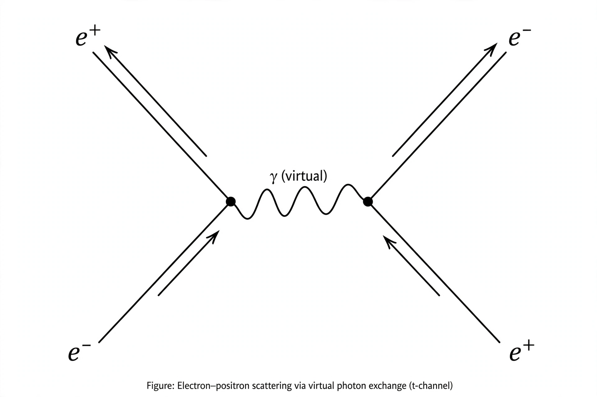

Quantum electrodynamics
| Field | Quantum field theory |
|---|---|
| Particles | Photon, Electron, Positron |
| Key figures | Richard Feynman, Julian Schwinger, Sin-Itiro Tomonaga, Freeman Dyson |

[Image: Feynman diagram of an electron and a positron exchanging a virtual photon]Quantum electrodynamics (QED) is the relativistic quantum field theory of electrodynamics. In essence, it describes how light and matter interact and is the first theory in which full agreement between quantum mechanics and special relativity is achieved.
QED mathematically describes all phenomena involving electrically charged particles interacting by means of the exchange of photons, and represents the quantum counterpart of classical electromagnetism, giving a complete account of matter and light interaction. It is one of the most accurately tested theories in physics: the theoretical prediction of the anomalous magnetic moment of the electron agrees with experiment to more than ten significant figures.
The theory was developed in the late 1940s by Sin-Itiro Tomonaga, Julian Schwinger and Richard Feynman, building on earlier work by Paul Dirac and others; Feynman, Schwinger and Tomonaga shared the 1965 Nobel Prize in Physics for their work.
History
The first formulation of a quantum theory describing radiation and matter interaction was due to Paul Dirac in 1927, who calculated the coefficient of spontaneous emission of an atom. Through the 1930s, work by Dirac, Werner Heisenberg, Wolfgang Pauli and others was plagued by infinities appearing in calculations of observable quantities.
In 1947 Willis Lamb and Robert Retherford measured the Lamb shift, a small splitting in the energy levels of hydrogen that existing theory could not explain, and Hans Bethe produced the first non-relativistic estimate of the shift using renormalisation. At the 1947 Shelter Island Conference and in the years immediately following, Tomonaga in Japan and Schwinger and Feynman in the United States each developed covariant, renormalised formulations of QED; Freeman Dyson showed in 1949 that their approaches were equivalent.
Feynman's view of QED
Feynman's formulation is based on the path integral: a particle travels from one spacetime point to another along every possible path, each contributing an amplitude, and the total amplitude is the sum over all paths. Interactions occur at vertices where charged particles emit or absorb photons.
Feynman introduced the diagrams that bear his name (Feynman diagrams) as a bookkeeping device for the terms of the perturbation series. Each diagram corresponds to a precise mathematical expression, and the rules for translating between the two are known as the Feynman rules.
Renormalisation
Calculations in QED involve integrals that can diverge. Renormalisation absorbs these infinities into the definitions of a small number of measured parameters — the charge and mass of the electron — after which all other predictions are finite. Although the procedure troubled some of its creators, it yields predictions of extraordinary precision, and its consistency was put on a firmer footing by later work on the renormalisation group, associated especially with Kenneth G. Wilson.
Predictions and precision tests
QED predicts the anomalous magnetic dipole moment of the electron (its g-factor departure from Dirac's value of 2, first calculated by Schwinger as α/2π) and of the muon, the Lamb shift in hydrogen, and hyperfine splitting in hydrogen and positronium. The agreement between theory and experiment for the electron's magnetic moment — better than one part in a trillion — is often cited as the most precise prediction in all of science.
Because the fine-structure constant α ≈ 1/137.036 governs the strength of the electromagnetic coupling, QED is a weakly coupled theory at accessible energies, and its perturbation series converges rapidly; this is the main reason for its great predictive accuracy.
Relation to other theories
QED is an Abelian gauge theory with symmetry group U(1). Its non-Abelian generalisation describes the strong interaction in Quantum chromodynamics (QCD), and QED merges with the weak interaction in the electroweak theory of Sheldon Glashow, Abdus Salam and Steven Weinberg. Together these form the gauge sector of the Standard Model of particle physics.